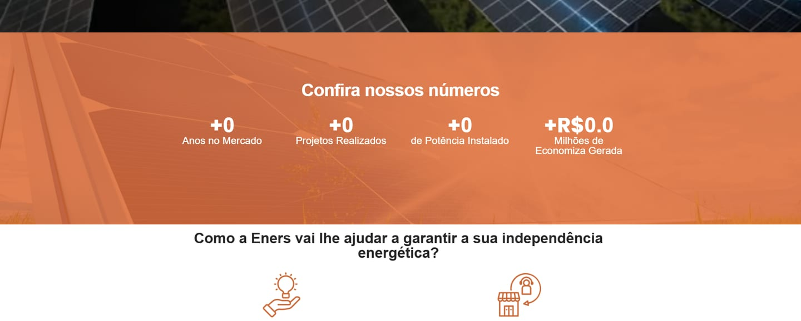
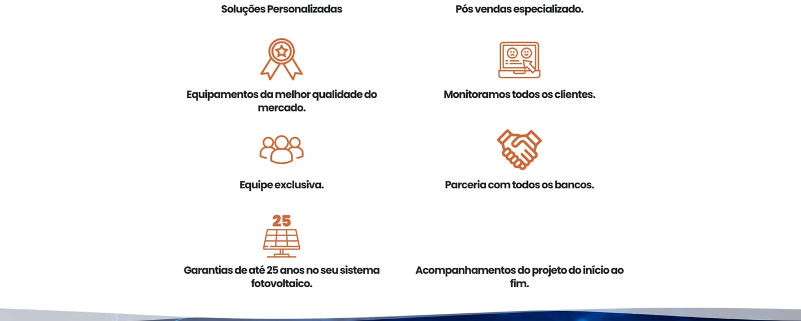
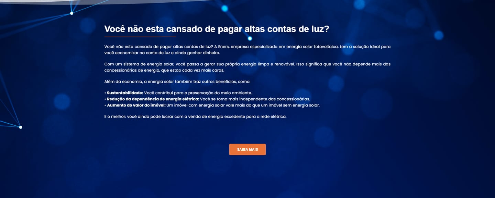
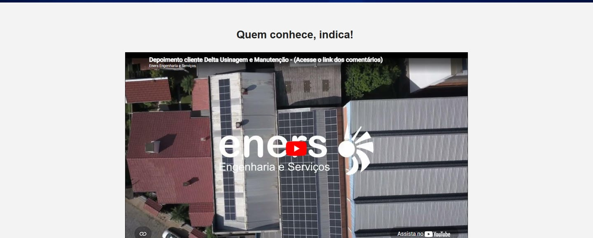
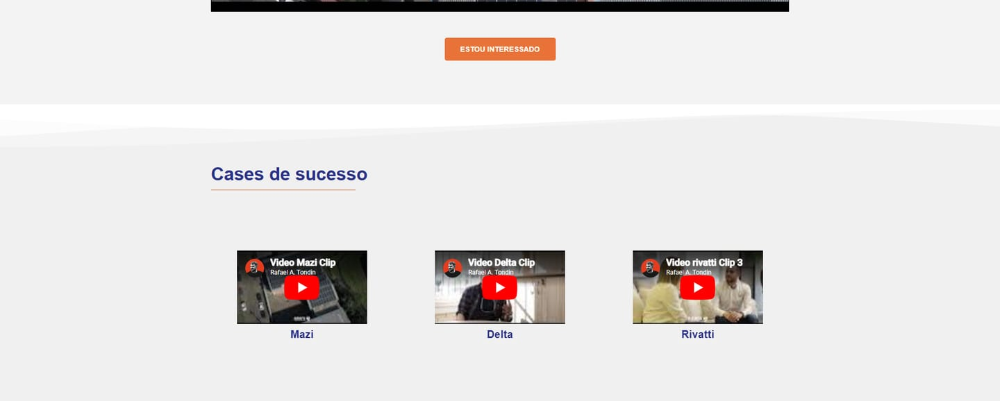
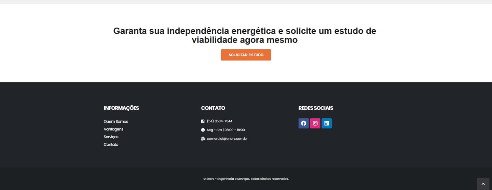

Eners

Independencia energética
Eners es una empresa brasileña de ingeniería especializada en energía solar fotovoltaica. El sitio tenía que explicar, a quien nunca pensó en instalar paneles, por qué la energía solar compensa: ahorro en la factura de luz, independencia de la distribuidora y retorno de la inversión.
- Desafío
- Convertir un tema técnico (potencia instalada, garantías, financiación) en un argumento simple para clientes residenciales y empresas, y llevarlos a pedir un estudio de viabilidad.
- Solución
- Una home guiada por la conversión: promesa directa en la portada, cifras de la empresa, ventajas con iconos, testimonios en vídeo de clientes y un mismo llamado a la acción repetido a lo largo de la página. Naranja solar sobre azul profundo, en línea con la marca.
- Mi rol
- Diseño y desarrollo del sitio en WordPress con Elementor.
- Resultado
- En línea desde 2023 en eners.com.br: cada sección termina en la misma acción, solicitar el estudio de viabilidad.






Créditos
Cliente
Eners · Engenharia e Serviços
Año
2023
Servicios
Diseño web · Desarrollo
Mi rol
Diseño · Desarrollo web
Tecnología
WordPress · Elementor
Sitio